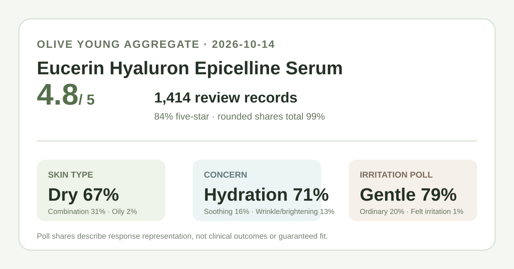
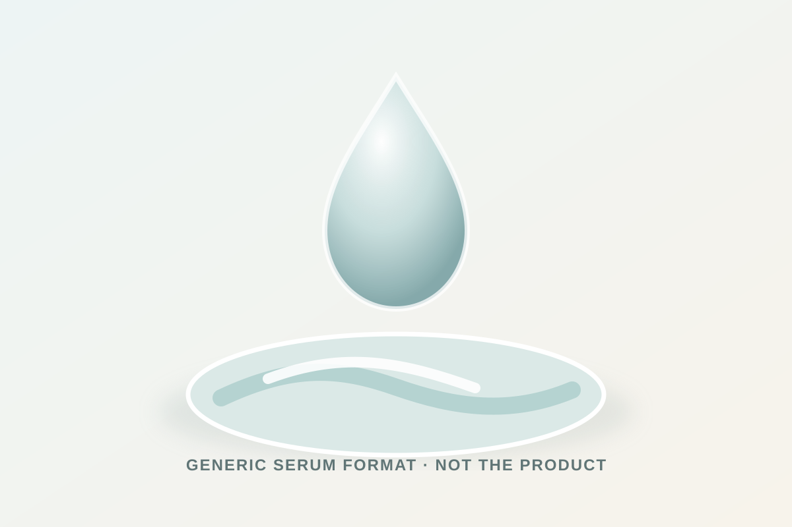

Data captured October 14, 2026. This analysis uses only Olive Young Korea's displayed aggregate rating, star distribution, and anonymous shopper polls. It does not reproduce or translate individual review text, names, or photos.

The short version: The listing showed 4.8 out of 5 from 1,414 review records. The displayed rating split was 84% five-star, 10% four-star, 4% three-star, 0% two-star, and 1% one-star. Dry skin, hydration concern, and the gentle response led their respective shopper polls.
The visible average was 4.8 stars. That is a compact satisfaction signal, not a laboratory result. The detailed review panel also displayed a rounded star distribution:
The total is 99%, not 100%, because the retailer displays whole-number percentages. It would be misleading to "correct" the missing point or convert these shares into exact record counts. The safe reading is that five-star ratings dominate the display while a small low-star tail still exists.
The captured skin-type poll showed 67% dry, 31% combination, and 2% oily. These shares describe the makeup of poll responses. They do not prove that the serum is more effective for dry skin or unsuitable for oily skin.
The imbalance matters. A dry-skin reader can see a comparatively large pool of people who chose the same broad label. An oily-skin reader gets much less representative evidence because only 2% selected oily. Even for the largest group, a self-selected retailer poll does not control climate, routine, application amount, other products, or the meaning each shopper gives to a skin-type label.
The separate concern poll displayed 71% hydration, 16% soothing, and 13% wrinkle or brightening concern. This tells us which category respondents chose, not whether the product delivered a measured change in any category.
That distinction is especially important for a name containing "Hyaluron" and "Epicelline." Product naming can help identify a listing, but it does not disclose a verified ingredient concentration, mechanism, or clinical outcome. This article therefore treats the name as catalog wording only. It does not estimate how much hyaluronic acid is present or claim wrinkle reduction, brightening, barrier repair, or medical benefit.
The irritation poll showed 79% gentle, 20% ordinary, and 1% felt irritation. That is a favorable aggregate perception signal, but it is not a safety certification. It does not tell us which ingredients mattered, how much was applied, whether respondents had a diagnosed condition, or whether reactions appeared after the review was posted.
If you have a known allergy, an active skin condition, or a history of reactions, check the current regional ingredient list and warnings. Patch-testing advice should come from the current label or a qualified clinician; the poll cannot substitute for either.

The retailer title classifies this as a serum. In general skincare navigation, a serum is a fluid leave-on step. That broad format description is the limit of what this data supports. I did not handle or apply this product, so I cannot verify its viscosity, scent, slip, absorption speed, tackiness, pilling behavior, or finish.
The captured interface did not provide verified directions for amount, frequency, layering order, or compatibility with other actives. Follow the current package and regional brand directions. When comparing this with another serum, keep the pack size, regional formula, seller, and return terms aligned rather than assuming two similarly named listings are interchangeable.
At capture, Olive Young Korea showed a ₩69,000 reference price and a price starting at ₩37,900 for a 30 ml promotional listing that named one sheet mask extra. Prices, option availability, coupon eligibility, and gifts can change quickly. This dated Korean listing is useful only as a shelf anchor; it is not a current quote for another country or proof of value.
A discounted set can look cheaper while bundling extras you would not otherwise buy. Compare the effective price of the serum itself, confirm the selected option, and check the final checkout total before using this snapshot for a purchase decision.
This is a comparatively mature retailer listing with a strongly positive rating profile. The most useful fit clue is not a promise of results; it is representation. Dry-skin and hydration-focused respondents dominate the captured polls, while oily-skin representation is very small. The gentleness poll is encouraging but still leaves a nonzero irritation response.
For a reader comparing hydrating serums, the data supports putting this product on a shortlist, then checking the current ingredient list, directions, and price against personal constraints. It does not support calling the product a guaranteed match, a medical treatment, or a proven anti-aging solution.
Dry skin was the largest displayed skin-type response at 67%. That shows who was most represented in the captured poll; it does not prove that the serum performs better for dry skin.
The captured irritation poll showed 79% gentle, 20% ordinary, and 1% felt irritation. These rounded aggregate responses cannot predict individual tolerance or establish safety for a skin condition.
No. The rating is a satisfaction signal. The wrinkle and brightening category accounted for 13% of the concern poll, but neither figure is a controlled efficacy measurement.
The listing identifies the product as a serum. A serum is generally a fluid leave-on format, but this analysis did not test the actual product and does not claim a specific viscosity, finish, or absorption speed.
A complete current ingredient list and verified concentration were not captured, so fragrance status and ingredient amounts are not stated. Check the current regional package or official label.
Source: Olive Young Korea product page, captured October 14, 2026. Product title, ranking, pack, price, rating, review count, star shares, and poll values can change.
Published by The K-Beauty Data Desk. The source does not independently verify every buyer's identity. No individual review is reproduced or translated, and I did not test the product on my own skin. No product or user photograph is copied.
← All K-Beauty Data Desk reviews · Review-volume ranking · Skin-type poll view